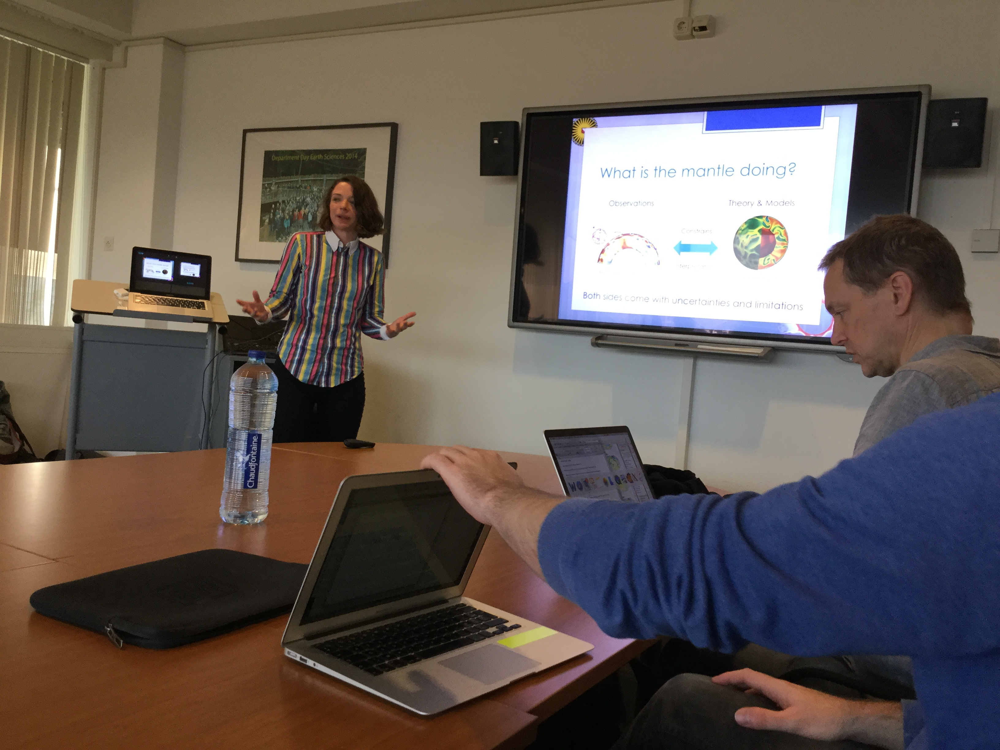
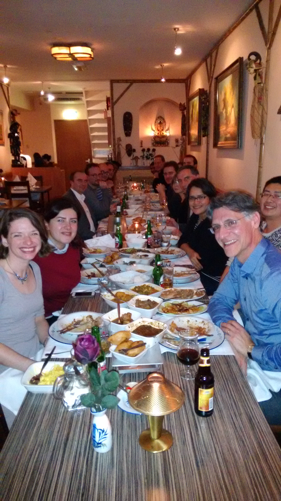
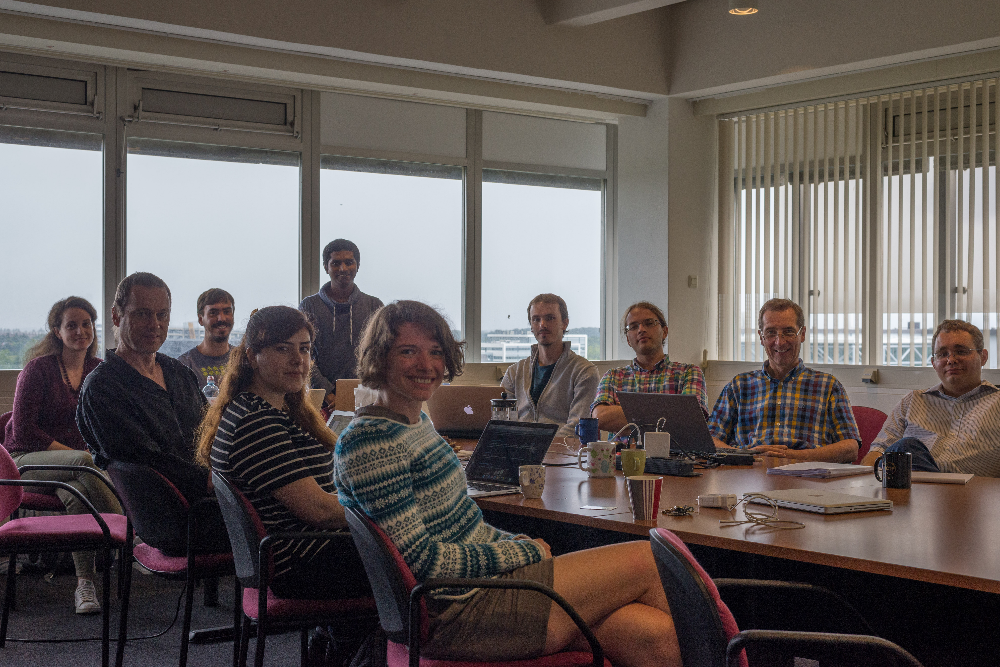
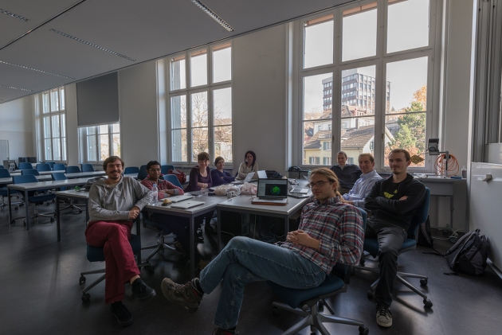

News!
- 01-05-2018
The end
After a productive 5 years, the project officially ended, but the research continues...
- 19-04-2018
Jeannot has been elected member of the KNAW
- 08-04-2018
EGU 2018
A delegation went to Vienna to present the latest results. Check the publications pages to see our posters and presentations.
- 07-03-2018
SIAM Conference on Parallel Processing for Scientific Computing
Paul attended with iGEO associated scientist Patrick Sanan. Check the publications pages to see our posters and presentations.
- 10-12-2017
Paul has been elected fellow of AGU
- 10-12-2017
AGU 2017
A delegation went to New Orleans to show the latest results. Check the publications pages to see our posters and presentations.
- Oct-Nov-Dec 2017
Jeannot visits ETH
Jeannot made several 2 day visits to talk about project progress and prepare the financial report. He also gave a seminar.
- 23-09-2017
87th SEG meeting
Yanadet attended the conference in Housten.
- 27-08-2017
XV International Workshop on Modelling of Mantle and Lithosphere Dynamics
A delegation went to Putten in the Netherlands to present the latest results. Check the publications pages to see our posters and presentations.
- Aug 2017
Jeroen Tromp visits UU
Jeroen Tromp form Princeton spent the month of August in the Utrecht seismology group. We did interesting theoretical work on the effect of induced stress on 3D wave propagation. The work has been submitted for publication.
- 13-07-2017
Goldschmidt 2017
We ensured a large presence at the Goldschmidt conference in Paris. Check the publications pages to see our posters and presentations.
- 10-07-2017
TIDES Workshop 2017
Many of us went to Oxford to present project results. Check the publications pages to see our posters and presentations.
- 23-04-2017
EGU 2017
Many of us went to Vienna for the EGU meeting 2017. Check the publications pages to see our posters and presentations.
- 8-04-2017
Jeannot visited Yale
Jeannot went to Yale to talk to Prof Shun Karato about melt and grain boundary sliding in the upper mantle. He also gave a departmental seminar.
- 13-03-2017
Workshop on uncertainties in geophysical imaging
Jeannot went to the Lorentz Center in Leiden to give an invited talk.
- 12-12-2016
AGU 2016
A delegation went to San Francisco to show the latest results. Check the publications pages to see our posters and presentations.
- 1-12-2016
Workshop Flow in the deep Earth
Following the RheoMan-Augury-iGEO-ATUNE workshop, many of us went to the Paris meeting organized by Barbara Romanowicz and Patrick Cordier at College de France. It was nice to see that the larger international community was very interested in our results.
- 29-11-2016
Exploratory workshop RheoMan-Augury-iGEO-ATUNE
Several ERC grantees investigate the Earth interior to understand its history and structure. There is promising complementarity in their projects and this first exploratory workshop is intended to investigate possible areas of collaboration. The iGEO team hosted this workshop in the Department of Earth Sciences at Utrecht University. Download the programme here for more details on the presentations by the group members working on the different ERC projects. Constructive discussions in and outside the meeting room lead to many ideas about future collaborations.


- 20-11-2016
Maria visited Nice
Maria visited Ebru Bozdag to discuss implementations of SPECFEM3D for inversions for discontinuities.
- 18-11-2016
14th Swiss Geosciences meeting
A delegation went to Lichtenfels to show the latest results. Check the publications pages to see our posters and presentations.
- 11-09-2016
German-Swiss Geodynamics workshop 2016
A delegation went to Geneva to show the latest results. Check the publications pages to see our posters and presentations.
- 29-08-2016
Jeannot attended the first Southeast Asian conference on Geophysics
Jeannot traveled to Bali to give a keynote lecture.
- 24-07-2016
SEDI 2016
A delegation went to Nantes to show the latest results. Check the publications pages to see our posters and presentations.
- 17-07-2016
Workshop on the Origin and Evolution of Plate Tectonics
A delegation went to Locarno to show our results. Check the publications pages to see our posters and presentations.
- 4-07-2016
ELSI Magma Oceanology Workshop
A delegation went to Atami in Japan to present results. Check the publications pages to see our posters and presentations.
- 26-06-2016
Goldschmidt 2016
We ensured a large presence at the Goldschmidt conference in Yokohama. Check the publications pages to see our posters and presentations.
- 06-06-2016
CMG 2016
We presented many new results in Paris at the conference on mathematical geophysics. Paul and Jeannot gave invited talks and Paul co-convened a session. Check the publications pages to see our posters and presentations.
- 03-06-2016
Suzanne visited the Johannes Gutenberg Universitaet in Mainz
Suzanne was invited to give a talk entitled: Finding the patterns in mantle convection: using learning algorithms to invert convection simulations.
- 25-05-2016
Jeannot has been elected member of Academia Europaea
- 18-04-2016
EGU 2016
Many of us went to Vienna for the EGU meeting 2016. Check the publications pages to see our posters and presentations.
- 08-04-2016
NAC 2016
The Utrecht members of iGEO went to Veldhoven to the Dutch Earth Science meeting. Presentations, posters and after dinner activities were hugely enjoyable.
- 14-03-2016
Andrew visited Cambridge
Andrew continued work with David Al-Attar, including leading seismology 'lunchtime discussion group' on the Valentine and Trampert (2016) paper.
- 15-02-2016
Antoine and Paul attended an AUGURY workshop
There is an increasing exchange between the AUGURY and iGEO ERC projects.
- 01-02-2016
Jeannot visited Muenster
Jeannot was invited to give a seminar entitled: Application of pattern recognition techniques in seismology.
- 27-01-2016
Antoine attended CREEP
This was the first meeting of the new Marie Curie ITN CREEP and Antoine presented a poster.
- 20-01-2016
Andrew visited ANU
Andrew was invited to Canberra to discuss various questions of inverse theory. He gave a talk entitled: Learning about the Earth: tackling geophysical problems using artificial intelligence.
- 14-12-2015
AGU 2015
A large delegation went to San Francisco for the AGU fall meeting 2015. Check the publications pages to see their posters and presentations.
- 27-11-2015
Laura visited ETH
Laura went to present her work on water in the transition zone and melting in the upper mantle.
- 23-11-2015
Antoine visited Bayreuth
Antoine visited G. Golabek and gave a seminar entitled 'Thermochemical convection, grain size evolution and crust generation in the mantle of the Earth".
- 11-11-2015
Laura visited Academia Sinica
Laura went to Taiwan to work with Frederic Deschamps on modelling and identifying plumes in the lower mantle. She also gave a talk entitled 'Using seismology to map water in the mantle transition zone'.
- 08-11-2015
PhD course Deep Earth Systems
Ilya visited Aarhus in Denmark to learn new skills related to his work.
- 04-11-2015
The Earth's Mantle and Core: Structure, Composition, Evolution workshop in Matsuyama
Antoine and Diogo attended this interesting workshop in Japan. They had stimulating discussions with other colleagues from geodynamics, mineral physics and seismology about the mantle and the core. They also visited the high-pressure lab in Ehime University and later spent a day visiting the Earth-Life Science Institute in Tokyo.
- 04-10-2015
GeoBerlin 2015
A small delegation from ETH went to Berlin. Check the publications pages to see their posters and presentations.
- 28-09-2015
PhD training school Les Houches
Fatemeh attended the school to learn about the latest developments in global geophysics.
- 25-09-2015
FEST
Andrew gave a talk to the Dept. Earth Sciences entitled ' "The brains of the operation": Applications of artificial intelligence in geophysics'.
- 02-09-2015
MSc introduction week 2015
Jeannot gave an overview on the field of Computational Earth Sciences and Andrew gave a symposium entitled 'Artificial intelligence and Monte Carlo: The future of geophysical imaging?'
- 31-08-2015
Fatemeh visited Bullard labs
Fatemeh visited David Al-Attar to discuss normal modes and the progress of her project.
- 31-08-2015
XIV International Workshop on Modelling of Mantle and Lithosphere Dynamics, Oleron
The whole ETH gang and Suzanne from Utrecht attended the Oleron meeting and presented their work.
- 03-08-2015
X International School of Earth Sciences, Miass, Russia
Ilya gave a talk at this summer school intended for students up to the PhD level.
- 27-07-2015
Second Workshop at UU
The second iGEO workshop took place in Utrecht, where the seismology group proudly showed off their new accommodation.

Everybody gave a talk to update the group on general progress. We made plans to make systematic runs on Euler and how to construct a database containing the files of the different runs. First results have been submitted for publication.
- 14-07-2015
Suzanne visited ETH
Suzanne spent a week in Zurich to learn how to use the latest version of StagYY so that we can get a new set of models running on Euler to investigate the effects of a larger number of varying parameters. She also gave a talk to the Geophysical Fluid Dynamics group entitled 'Inverting mantle convection using pattern recognition'.
- 06-07-2015
Andrew visited Bullard labs
Andrew spent a week in Cambridge to work with David Al-Attar on FrOsT development, a computer code for normal mode seismograms in 3D media.
- 30-06-2015
Maria attended a VERCE summer school
Maria went to Liverpool to invested the possible use of tools developed in the VERCE project..
- 24-06-2015
IUGG 2015
Paul, Charitra, Diogo and Antoine attended IUGG 2015 in Prague from June 24th to July 2nd. Paul and Antoine gave a talk. Charitra, Diogo and Antoine also gave poster presentations. Apparently Prague has a karaoke place worth mentioning!
- 18-06-2015
Jeannot visited the RheoMan group in Lille
Jeannot gave a talk on seismic anisotropy in Lille and talked about possible collaborations between the iGEO and RheoMan ERC projects.
- 31-05-2015
TIDES PhD training school
Maria and Jeannot attended the first TIDES meeting in Bertinoro.
- 28-04-2015
Antoine gave a talk at LIPhy, University Joseph Fourier, Grenoble
Title: A new physical model of grain size evolution: application in geodynamics. Summary: The thermodynamics of a grain size distribution in deformation is discussed. A new physical model for the evolution of the average grain size is presented. Surface tension of grain boundaries plays the major role and requires a calibration of the energy partitioning between viscous heating and dynamic recrystallisation. The assumption of the self-similarity of the grain size distribution is shown to produce an analytical model for the average grain size, considering diffusion and dislocation creep. The equilibrium average grain size under deformation reported in previous studies is used to calibrate the free parameters of the entire model. Several geodynamical applications of this new model are then presented.
- 12-04-2015
EGU 2015
The iGEO team from Zurich attended EGU 2015 in Vienna. Paul, Charitra, Diogo and Antoine gave a PICO presentation and Ilya gave a poster presentation.
- 09-04-2015
Antoine gave a talk at the Earth and Planetary Magnetism group at ETH
Title: Convection and grain size evolution in the mantle. Summary: Grain size evolution in a convecting mantle makes the viscosity very time-dependent and therefore difficult to calibrate. We present a new semi-analytical approach allowing to anticipate grain growth, dynamic recrystallisation and phase transition-related in self-consistent simulations of compressible convection. A large range of rheological parameters can produce a satisfying present-day viscosity profile. Observations of seismic anisotropy might help restricting the choice of parameters that should be used. The evolution of the Earth from Archean to present day is also discussed.
- 01-04-2015
iGEO Euler share comes online
Euler is the ETH supercomputer based on a shareholder model. Our share is 105 nodes (Intel Xeon, 24 cores, 64 GB RAM, 10Gb/s Ethernet and 56Gb/s InfiniBand).
- 06-03-2015
Jeannot gave the opening talk for the new seminar series (FEST: Friday Earth Sciences Talks) at the Department of Earth Sciences in Utrecht
Title: Seismic tomography in the 21st century. Summary: I will review the principles of classical seismic tomography and focus on the reliably of the obtained images, as many features seem to be over-interpreted in the literature. With the advance of high performance computing, seismic tomography recently made significant progress. I will briefly discuss the novelty of what is called multi-scale full waveform inversion and show how the reliability can be assessed quantitatively. Using this technique, we modelled the crust and upper mantle beneath Europe using seismic data varying over large spatio-temporal scales. I will show examples of high resolution images beneath the North Atlantic and Anatolia and discuss their most notable features.
- 09-01-2015
Antoine visited Utrecht
Antoine spent a week in Utrecht to finish the first version of this website and work on the geodynamic reference model central to the project. Antoine and Suzanne have written a MATLAB routine able to import the new HDF5/XDMF input/output format of StagYY into the MATLAB codes calling the neural network.
- 15-12-2014
AGU 2014
Charitra, Ilya, Paul, Diogo, Jeannot and Suzanne went to San Francisco for the AGU fall meeting 2014. Check the publications pages to see their posters and presentations.
- 23-11-2014
Maria visited Nice
Maria visited Ebru Bozdag in Nice to learn details about the use of SPECFEM3D.
- 18-11-2014
First Workshop at ETH
The first iGEO workshop took place in Zurich in the Geophysical Fluid Dynamics group of Paul Tackley.

Everyone working on the project got to know each other. First results and projects have been discussed. The convection code StagYY offers many possibilities to investigate a wide range of Earth parameters. We discussed them all and made a list of which parameters to study in priority.
- 03-08-2014
SEDI 2014, Japan
Ilya and Paul attended the 14th international symposium on the Study of Earth's Deep Interior.
- 08-06-2014
Goldschmidt 2014, Sacramento
Paul gave a talk on the effect of melting on the thermo-chemical evolution of Earth's deep mantle.